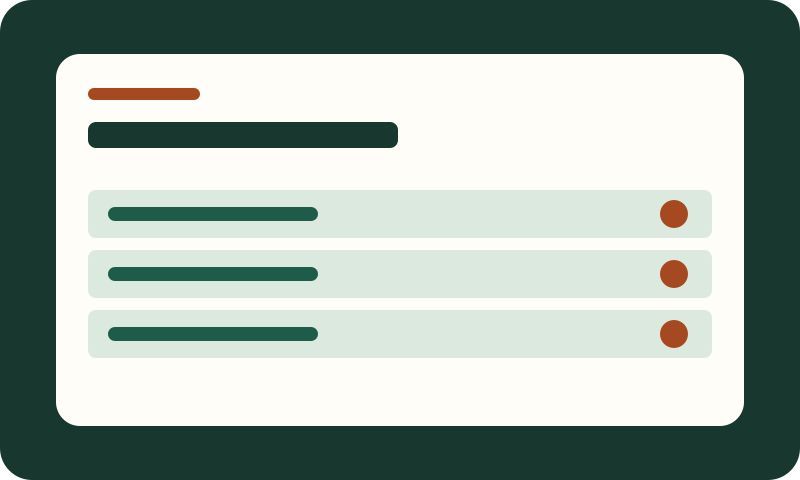

GEP1316 · Ara Değerlendirme Ödevi 1
Toplumsal Sorun Haber İzleyicisi
Python komut satırı uygulaması; haber başlığı, kaynak adı, yayın tarihi ve kategori bilgisini alır. Kayıtları CSV dosyasına ekler, yinelenen kayıtları denetler ve beş kategori için sayım raporu oluşturur. Haberleri internetten otomatik çekmez.
- Python 3
- CSV
- Standart kütüphane
“Ne öğrendim?” taslağı: Kullanıcı girdilerini doğrulamayı, CSV kayıtlarını ve kategori raporlarını uygulamayı gösterir. Bu cümle Lara'nın onayladığı kişisel ifade değildir.
GitHub deposunu aç